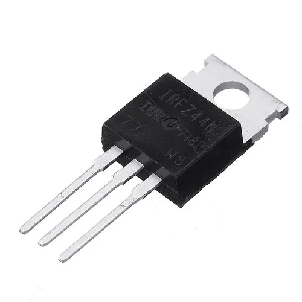

Transistores
-
O transistor é um dispositivo semicondutor utilizado para amplificar ou modificar sinais eletrónicos e potência elétrica. A diferença de potencial ou corrente aplicada a um par de terminais do transistor controla a corrente através de outro par de terminais.
- Transistores Bipolares de Junção (BJT)
- NPN (Négatif-Positif-Négatif): Utilizado para amplificação de sinais e comutação de corrente.
- PNP (Positif-Négatif-Positif): Funciona de forma semelhante ao NPN, mas com polaridades invertidas.
- Transistores de Efeito de Campo (FET)
- JFET (Junction Field-Effect Transistor): Utilizado em aplicações de alta impedância e baixo ruído.
- MOSFET (Metal-Oxide-Semiconductor Field-Effect Transistor): Amplamente utilizado devido à sua alta eficiência e capacidade de comutação rápida.
- Transistores de Potência
- Transistor Bipolar de Potência (BPT): Utilizado em amplificadores de áudio, fontes de alimentação e outros dispositivos de alta potência.
- MOSFET de Potência: Eficiente em termos de energia, utilizado em fontes de alimentação comutadas, inversores, etc.
- Transistores de Efeito de Campo de Óxido Metálico (MOSFET de alta frequência)
- HEMT (High Electron Mobility Transistor): Usado em circuitos de alta frequência, como em comunicações sem fio e dispositivos RF.
- Transistores de Silício-Germânio (SiGe)
- HBT (Heterojunction Bipolar Transistor): Combina silício e germânio para desempenho de alta frequência e baixo ruído em circuitos de comunicação.
- Transistores Unijunção (UJT)
- UJT (Unijunction Transistor): Usado em osciladores de relaxamento e geradores de pulsos.
- Transistores de Efeito de Campo Orgânicos (OFET)
- OFET (Organic Field-Effect Transistor): Baseado em materiais orgânicos, usado em eletrónica flexível e displays OLED.
- Transistores de Nanotubos de Carbono (CNTFET)
- DST (Dopingless Transistor): Um novo tipo de transistor que não requer dopagem, prometendo menor consumo de energia e maior eficiência.